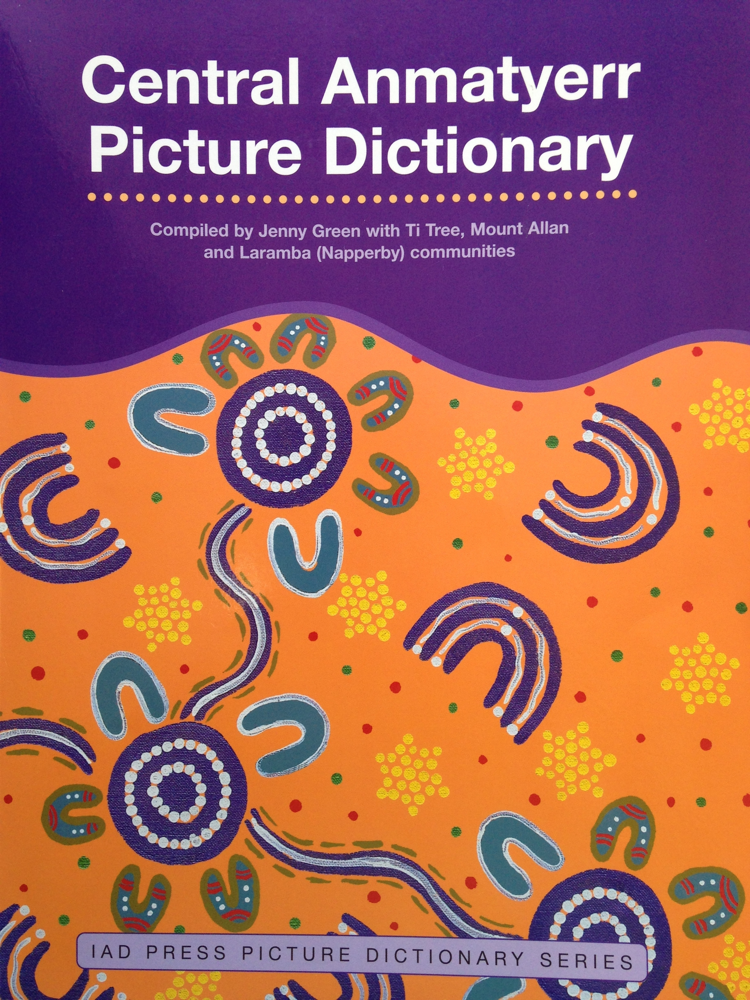
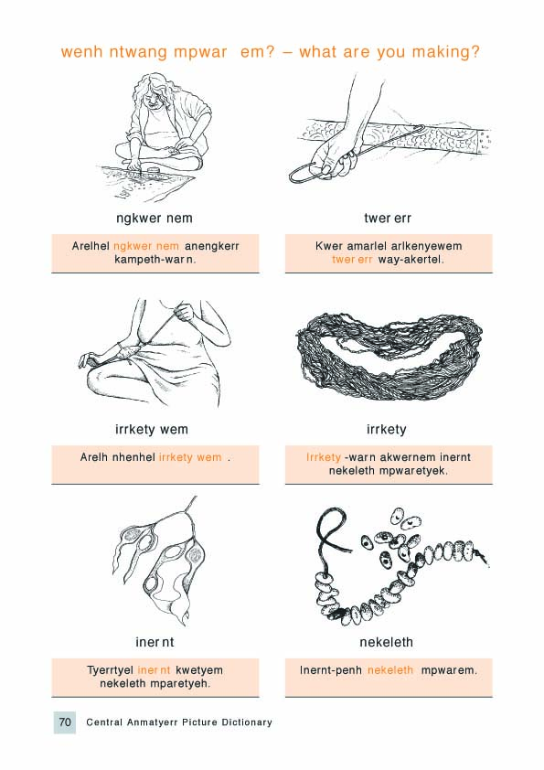
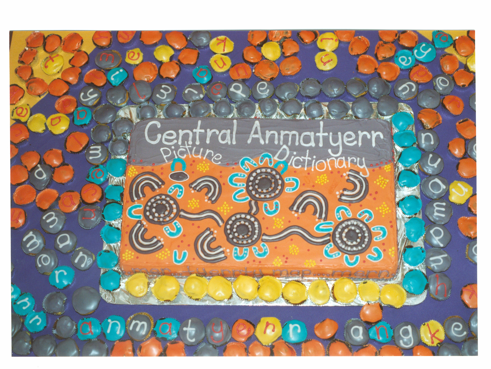
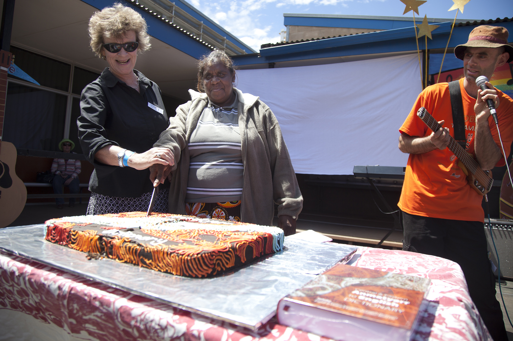

The Central Anmatyerr Picture Dictionary
The Central Anmatyerr Picture Dictionary was the first in a series of picture dictionaries published for Central Australian languages by IAD Press. The idea came about at an Anmatyerr education meeting held at Laramba in 2001. Anmatyerr school staff and community elders from Ti Tree, Laramba and Mount Allan decided to use part of an Indigenous Education Strategic Initiatives Program (IESIP) grant to fund the development of a picture dictionary for use by children in their schools. We developed a picture dictionary template that was then used for other Aboriginal languages in Central Australia.
The Central Anmatyerr Picture Dictionary is a rich resource. It includes nearly 600 words with accompanying drawings. These are arranged in themes: including people, family, country, animals, plants and medicines. There are Anmatyerr sentences illustrating the use of the words, word lists in Anmatyerr and English, and a map of communities and outstations.

The Central Anmatyerr Picture Dictionary, 2003. Cover design April Pengart Campbell

A page from The Central Anmatyerr Picture Dictionary.

Cake celebrating the launch of The Central Anmatyerr Picture Dictionary, Ti Tree, 2003.
Jennifer Green
The Central & Eastern Anmatyerr to English Dictionary
The first big dictionary of the Anmatyerr language was published by IAD Press in 2010. It was the result of many years of work in Anmatyerr bush communities and in Alice Springs. The project took almost a decade to complete, and during this time around 100 Anmatyerr people were involved in documenting their language. April, Eileen and Clarrie worked hard on the dictionary with others from Ti Tree community. The dictionary includes Anmatyerr from across the Anmatyerr region, even though there are some differences between Central Anmatyerr — spoken at Ti Tree and in communities as far west as Mt Allan — and Eastern Anmatyerr, spoken at Stirling and in some Sandover communities. After much thought and discussion, we decided to make one dictionary for Anmatyerr rather than two. The dictionary contains over 8000 entries and sub-entries, and more than 8500 example sentences. It includes a wealth of cultural information, some grammatical notes, a guide to sounds and spelling, a discussion of the Anmatyerr kinship system, and an English to Anmatyerr finder list.
I felt really happy. First we saw the small one, the Picture Dictionary. We had only started to learn [to write] the Anmatyerr language recently. The linguists helped us to write it down, and to teach the kids. Well, we were really happy. The Picture Dictionary was first, and after that we were happy to see, whatsitname...the big Dictionary. We had started to teach the kids Anmatyerr. Sentences, four or five perhaps. The poor things were learning a bit at a time, but their confidence grew with the dictionary and they learnt to read. I want to see them write a whole page of sentences in Anmatyerr, or stories about their Dreamings and their Country. Stories the elders tell them and record for them – that's the kind of thing that they can learn to write. Then they can be like linguists.


April Pengart Campbell and Jennifer Green cut the cake at the launch of The Central and Eastern Anmatyerr to English Dictionary, Ti Tree School, 200X.
XX